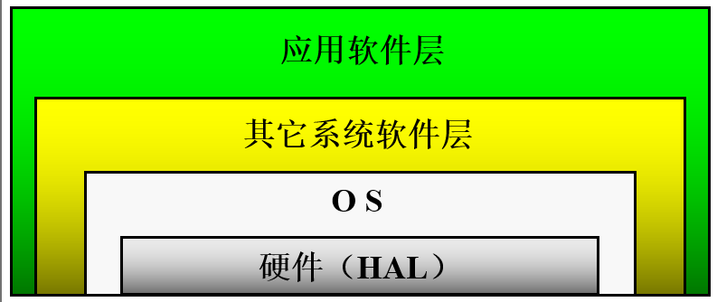
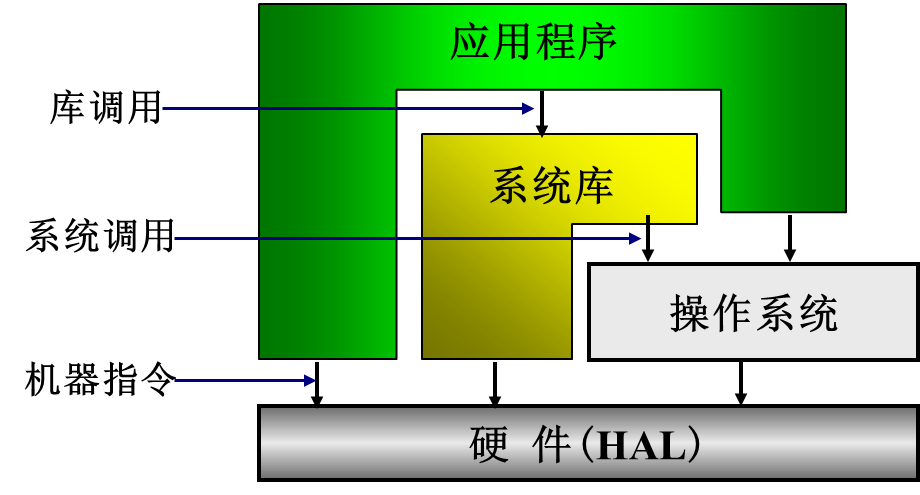

1.1 操作系统概念
操作系统地位
硬件抽象层（HAL）之上
所有其它软件层之下

- 运行视图
- 系统库(lib)可调用操作系统，执行硬件指令
- 应用程序可以调用lib和操作系统，执行硬件指令
- 
操作系统的作用
- 管理系统中软硬件资源
- 例如：CPU，内存，设备，文件
- 为用户(应用程序)提供良好的服务(界面)
- 命令接口（联机和脱机），程序接口(系统调用），GUI
- 管理系统中软硬件资源
操作系统定义
[!important]
操作系统是位于硬件层(HAL)之上，所有其它软件层之下的一个系统软件，通过它管理系统中各种软硬件资源（计算机资源），使它们被充分利用，方便用户使用计算机系统（向上层提供和简便易用的接口）。
- 系统软件
- 管理资源
- 向上提供接口
操作系统的历史
操作系统的产生
- 手工操作阶段
- 电子管：二进制程序，打孔：纸带和卡片
- 批处理阶段
- 联机批处理（单道批处理）：读卡机，磁带机（监管程序：OS雏形）：
- 脱机批处理：卫星机：
- 执行系统阶段：I/O处理机（通道和中断技术）
操作系统的完善
- 多道批处理系统：多道批处理:主机中同时放多个作业,最大限度提高资源利用率，标志操作系统走向成熟(在作业执行时用户不能直接干预，交互性差)
- 分时系统：时间片轮换（用于多用户，交互性好）
- 实时系统：时间约束（硬实时：严格时间约束）（软实时：时间约束宽松）：及时响应特性
- 通用操作系统：通用操作系统可以同时处理实时任务、接受终端请求、运行成批作业。
操作系统的发展
网络操作系统
分布式操作系统
多处理机操作系统
单用户操作系统
面向对象操作系统
嵌入式操作系统
智能卡操作系统
多核技术下新一代操作系统
操作系统的特性
并发性
- 多个程序在宏观上同时向前推进，微观上依旧是交替进行
- 例如OS与OS并发，用户程序与OS,用户程序与用户程序
- 不同于并行，即多个程序同时进行
共享性
多个程序共用系统中的各种软硬件资源
在操作系统的协调和控制下
又分为互斥共享（宏观同时，微观交替），同时共享（同一时刻访问）
程序异步性
在多道程序环境下，允许多个程序并发执行，但由于资源有限，进程的执行不是一贯到底的，而是走走停停，以不可预知的速度向前推进，这就是进程的异步性；
所以只有系统拥有并发性，才有可能导致异步性。
交替的切换点是中断：
用户程序向操作系统切换；
操作系统程序向操作系统程序切换（中断嵌套）。
中断随机发生，致使程序切换不确定、不可预知。
虚拟性
所谓虚拟就是利用某种技术把一个物理实体变为若干个逻辑实体
空时复用（虚拟存储），时分复用（虚拟处理器）
[!note]
其中并发和共享互为存在条件，是操作系统最基本的两个特征；
并且虚拟和异步依赖于并发
操作系统运行环境
定时装置
绝对时钟
记载实际实践，不发生中断
系统操作员可以修改，一般用户使用
绝对时钟的值保存于硬件寄存器中
程序可以读取绝对时钟的值
间隔时钟
定时发生中断，一般间隔单位为毫秒
间隔时钟是实现多道程序的基础—保证操作系统获得控制权。
其它中断也进入操作系统，但是否发生，何时发生没有保障。
通过间隔时钟可以构造逻辑时钟。
堆和栈
尽管用户进程的“堆”和“栈”在物理上通常是相邻的。每个运行程序都有一个堆和两个栈（一个用户栈，一个系统栈）
堆属于用户空间，用于保存程序中的动态变量
例如树的结点，堆空间由操作系统分给运行程序，由于不同程序运行时对动态变量的使用不同，因而堆空间大小需求不定。
用户栈属于用户空间，用于保存用户函数调用时的返回点、参数、局部变量、返回值。除此之外，用户栈还要传送调用操作系统时传给操作系统的参数。
用户程序调用操作系统时，有两个载体可以用来传递参数：
寄存器：比较小的数据如：一个字符、一个整数、一个浮点数
用户栈：比较长的参数如：文件名
对每个系统调用，操作系统都规定了参数和返回值的存放位置，用户程序必须遵循相应的规定
系统栈也称为核心栈，逻辑上属于操作系统空间
程序切换的同时伴随着堆和用户栈以及系统栈的切换，但硬件的栈指针是多个进程共享的。
作用：
- 中断响应时保存中断现场
- 保存函数调用返回点、参数、局部变量、返回值
内存中操作系统空间的一个固定区域
寄存器
硬件系统提供一套寄存器，由运行程序使用。
程序切换时，一般需要把寄存器的当前值保存起来，再次运行前再恢复。
- 程序状态字
- 指令计数器
- SP
- regs
- fregs
- 地址映射寄存器
特权指令与非特权指令
特权指令(privileged instruction)
只有在管态才能执行的指令(影响系统状态)
特权指令只有操作系统（内核空间）才能执行，用户程序（用户空间）不可执行
非特权指令(non-privileged instruction)
在管态和目态都可以执行的指令(不影响系统状态)
处理机状态及状态转换
处理机状态
系统态（system mode）(管态，核态)
用户态（user mode) (目态，常态)
状态转换
- 管态 ->目态(中断返回，置程序状态字）
- 目态 -> 管态(中断，trap又称为陷入指令)
地址映射机构
- 逻辑地址映射到物理地址
- 逻辑地址(虚地址)：程序中产生的地址
- 物理地址(实地址)：存储器地址
存储保护设施
- 防止应用程序
- 侵犯操作系统空间
- 侵犯其它用戶空间
- 对共享区域的非法访问
- 地址检查
- 越界检查;
- 越权检查（对共享区域）
中断装置
- 发现并响应中断的硬件机构
当前（PSW，PC）->系统栈
中断向量（PSW，PC）->寄存器；中断向量由硬件实现
通道与DMA
- 通道：接受CPU委托完成输入输出操作任务，即负责IO操作的处理机
- DMA：接受CPU委托直接依靠硬件完成数据在主存和块设备之间的传输
相同点：实现IO设备和内存之间建立数据直传通路
不同点
- DMA只能实现固定的数据传送控制，而通道有自己的指令和程序
- DMA只能控制一台或者少数几台同类设备，而一个通道可以控制多台同类或者不同的设备
I/O保护
- 定义所有I/O指令为特权指令
- 方便使用：用户使用I/O指令做I/O传输非常麻烦
- 防止发生冲突